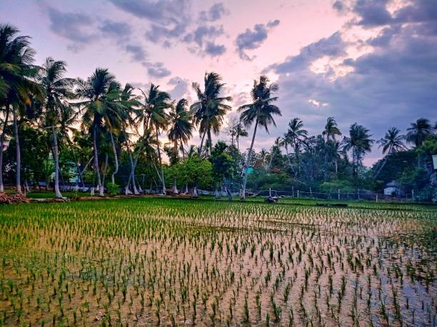

Haryana
"Desh ki Dharti, Kisan ki Shakti"
Quick Facts
Popular Tourist Attractions
Kurukshetra
Historical battlefield from Mahabharata, a center for pilgrimage and culture.
Sultanpur Bird Sanctuary
Home to migratory birds and nature lovers near Gurgaon.
Pinjore Gardens
Beautiful Mughal-style garden with fountains, terraces, and heritage feel.
Nature & Wildlife
Despite being a heavily agricultural state, Haryana supports wildlife in sanctuaries like Sultanpur, Kalesar National Park, and Bhindawas Bird Sanctuary.
Famous Personalities
- Kalpana Chawla: Astronaut and aerospace engineer from Karnal.
- Kapil Dev: Cricket legend and 1983 World Cup-winning captain.
- Milkha Singh: Flying Sikh, one of India's greatest athletes.
Local Handicrafts
Famous for handloom, durries (rugs), phulkari embroidery, clay toys, and woodwork — especially in Panipat and Hisar regions.
Climate
Haryana experiences a subtropical climate — hot summers, cold winters, and monsoon rains. Agricultural activities dominate all seasons.
Culture & Festivals
Folk Dance & Music
Dances like Ghoomar and Phag are performed during festivals and weddings.
Festivals
Lohri, Teej, and Baisakhi are celebrated with full rural zest and joy.
Cuisine
Popular dishes include Bajre ki Roti, Lassi, Kachri ki Sabzi, and Churma.
Clothing
Traditional dress includes dhoti-kurta for men and salwar-kameez with odhani for women.
Did You Know? Haryana was carved out of Punjab in 1966 and is one of the wealthiest states in India in terms of per capita income.
Note: Information may be subject to updates. Kindly notify us of any discrepancies.